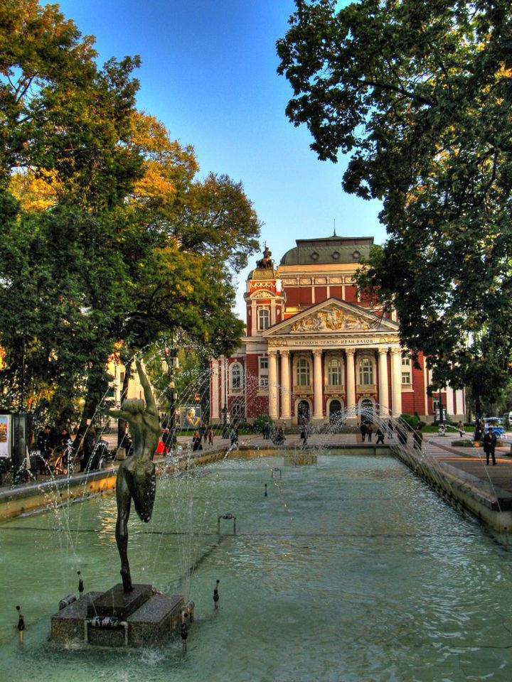

🇧🇬 Bulgaristan Seyahat Anılarım
Balkanlar'ın samimi ve tarihi komşusu.
📍 Nereleri Gezdim?
Sofya Alexander Nevski Katedrali'ni ve Plovdiv sokaklarını gördüm.
📸 Gezimden Kareler

Sofya sokaklarında tarihi bir yürüyüş

Balkanlar'ın muhteşem doğası